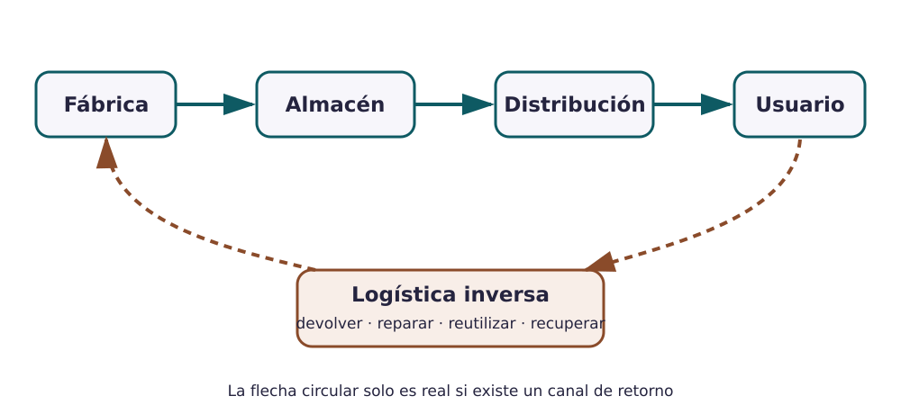
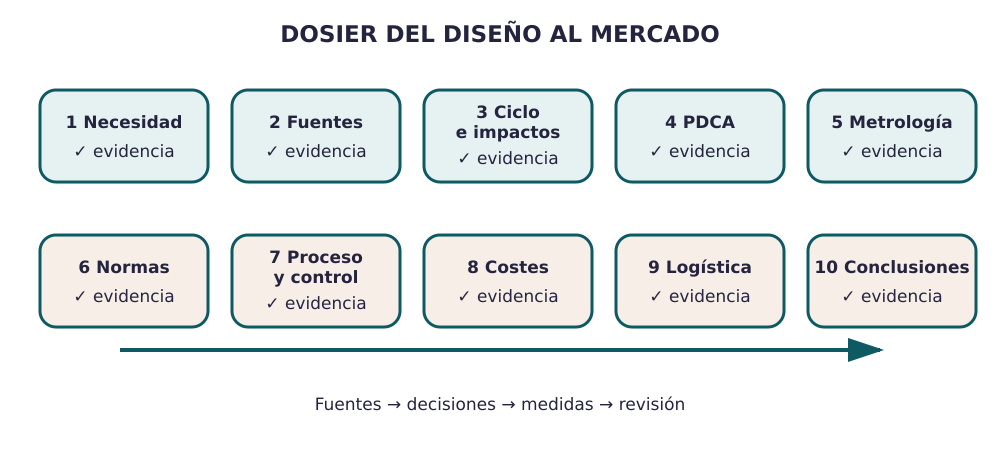

Contenido
La producción no termina cuando la pieza sale de la línea
El producto debe protegerse, almacenarse, transportarse, distribuirse, presentarse y llegar a la persona adecuada. Después del uso, la logística inversa puede recuperar envases, componentes, productos reparables o materiales. Estas decisiones influyen en coste, impacto, calidad percibida y capacidad de reparación.

Diseñar el flujo
- Embalaje: protege, agrupa, informa y debe ajustarse al transporte.
- Almacenamiento: controla espacio, rotación, condiciones y trazabilidad.
- Transporte: combina distancia, masa, volumen, urgencia, riesgo y emisiones.
- Distribución: puede ser directa o utilizar intermediarios.
- Comercialización: conecta propuesta de valor, público, canal, servicio y comunicación.
- Logística inversa: gestiona devolución, reparación, reutilización y recuperación.
Coherencia circular
Si en S2 afirmaste que un material se recupera, aquí debe existir un canal realista para recogerlo, separarlo y llevarlo al tratamiento adecuado. Sin retorno, la flecha circular es solo un dibujo.
- Representad embalaje, almacenamiento, transporte, distribución y canal de venta.
- Añadid al menos una vía de devolución, reparación o recuperación de materiales.
- Explicad una decisión de comercialización coherente con el producto y el público.
- Intercambiad el dosier con otro equipo y aplicad la lista de auditoría.
- Corregid los huecos detectados y registrad los cambios.
Auditoría cruzada
- □ Las afirmaciones importantes tienen fuente o se presentan como hipótesis.
- □ El ciclo incluye producción, uso y final de vida, no solo venta.
- □ El PDCA contiene indicador, objetivo, datos y decisión.
- □ Cada control termina en aceptar, rechazar, corregir o investigar.
- □ Las tolerancias y los instrumentos son compatibles.
- □ Norma, ley, certificación y acreditación no se confunden.
- □ La logística inversa conecta con el final de vida.
- □ Las figuras se entienden sin una explicación oral adicional.
Describe un cambio concreto realizado tras la auditoría, señala la sección afectada y
explica por qué el resultado es mejor. Descarga la bitácora como
bitacora_decisiones.pdf y entrégala en Moodle. El dosier debe quedar cerrado y
listo para exportar; se entrega al comenzar la siguiente sesión.

Verdadero o falso
Comprueba si el recorrido diseñado es coherente desde la fábrica hasta el retorno.
00:00: